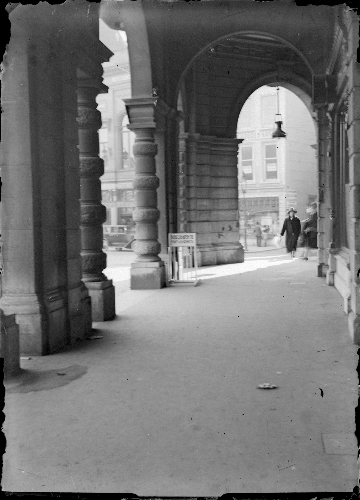
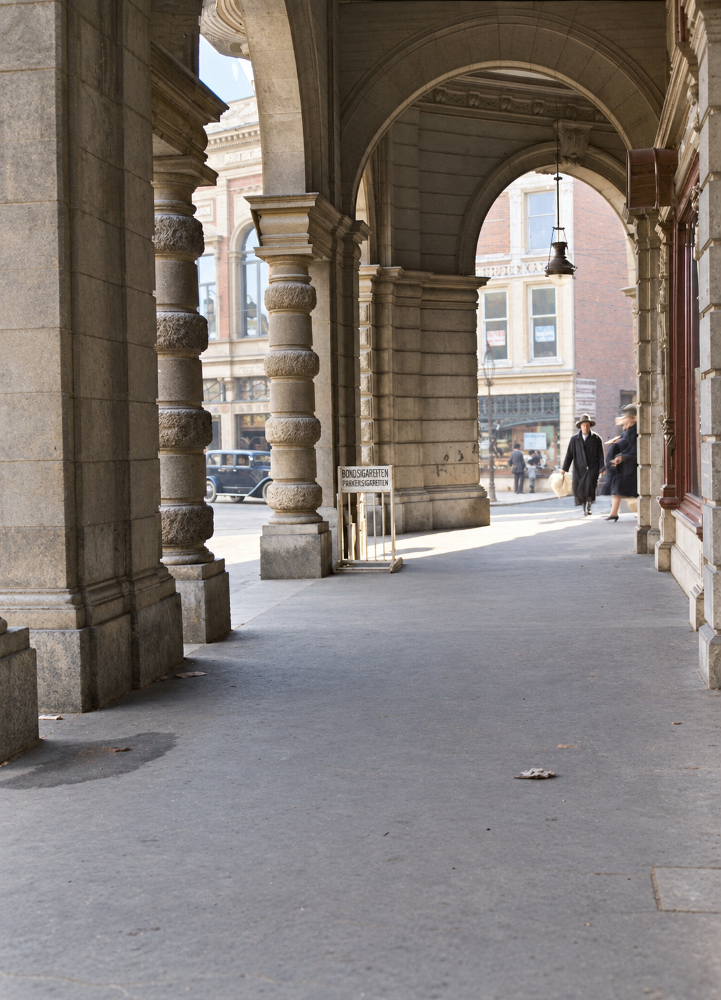

Plan C, opnieuw in beeld.
Dezelfde historische scène — een proef met kleur en moderne beeldkwaliteit.


De historische situatie is het uitgangspunt. Kleuren en sommige fijne details zijn door AI geïnterpreteerd. Dit is geen historisch gevalideerde restauratie en geen echte foto van vandaag. Klik op een foto voor het volledige bestand.